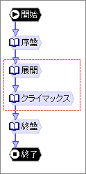
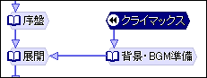
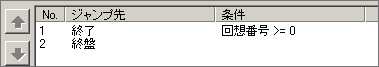
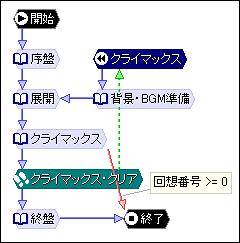
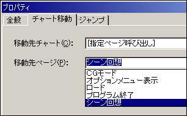

チュートリアル
シーン回想は、クリア済みの特定の場面を鑑賞するためのモードです。シーン回想を実現するには、まず回想するためのシーンの範囲を決めなければなりません。

例えば、チャートが左のようになっているとして、「展開」から「クライマックス」までを１つの回想用シーンにしたいとします。
まず、このチャートに「回想開始」ノード を追加します。「回想開始」ノードが回想用シーンの先頭になります。つまり、プレイヤーが回想を始めると、最初にこのノードに飛んでくることになります。
を追加します。「回想開始」ノードが回想用シーンの先頭になります。つまり、プレイヤーが回想を始めると、最初にこのノードに飛んでくることになります。
このノードは名前とジャンプ先しか編集できません。名前は何でも構いませんが、ここでは「クライマックス」にします。そして「展開」ノードにジャンプさせたいところですが、ここで問題があります。シナリオの内容にも依りますが、恐らくこのシナリオでは「序盤」ノードの段階で、背景を表示したりBGMを鳴らしているはずです。そうだとすると、回想でいきなり「展開」ノードに入ると、背景がなかったりBGMが鳴っていなかったり、という状況で始まってしまいます。そこで、回想の時は、「展開」ノードに入る前にその辺りの準備をしておきます。
結果、次のようなチャートになります。

「始まり」ができたので次は「終わり」です。このまま進むと「終盤」ノードに行ってしまうので、その前に終了しなければなりません。そのために「回想番号」という変数を使います。この変数には現在行っている回想のシーン番号が入ります。また、回想モードでない場合は-1が入ります。つまり、この変数が0以上なら回想実行中というわけです。
以上を踏まえると、「クライマックス」ノードのジャンプ先は次のようになります。

次は、どこまで来たらこのシーンを回想できるようにするか、クリアとするか、という設定です。これには「回想許可」ノード を使います。「回想許可」ノードは、指定した「回想開始」ノードを回想できるようにするノードです。
を使います。「回想許可」ノードは、指定した「回想開始」ノードを回想できるようにするノードです。
では、「回想許可」ノードを追加してください。そして、「許可するシーン」を上記で作った「回想開始」ノードにしてください。これで、この「回想許可」ノードまで来れば、このシーンを回想できるようになります。
このノードを挿入する位置ですが、「クライマックス」ノードが終わればクリアとしたいので、「クライマックス」ノードと「終盤」ノードの間に入れます。
これでチャートは完成です。以下のようになります。

次はオプション設定です。「プロジェクト」メニューの「オプション」を選択してください。オプションダイアログが出たら、「シーン回想」タブを選択します。
「リスト」には、「回想開始」ノードが自動的に抽出されて表示されます。この順でサムネイルが並ぶことになるので、適当な順に並び替えてください。
「デザイン」はサムネイル画面をどのようにデザインするかといった設定、「サウンド」はシーン回想で使用するBGMや効果音の設定です。どちらも詳細はこちらをご覧ください。
設定が終わったらOKをクリックしてダイアログを閉じます。
次にサムネイル画面用の画像ファイルを用意します。画像の大きさは自由ですが、うまく画面に並ぶようにオプションのデザイン設定を調整してください。サムネイル用の画像ファイルはグラフィックフォルダの中の「シーン回想」フォルダの中に入れてください。ファイル名は「回想開始」ノードの名前と同じにしてください。上の例で言うと クライマックス.GAL になります。
実際にシーン回想を実行するには、「チャート呼び出し」ノードを使って、『［指定ページ呼び出し］シーン回想』を呼び出します。
